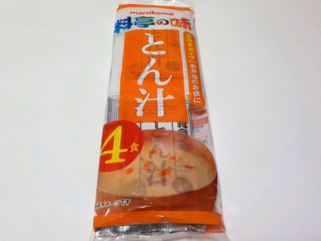

マルコメの料亭の味とん汁
2023/04/22

生みそタイプの豚汁です。
高価格商品ではないので具沢山だとか食感とかはないです。でもね、甘みがあって美味しかったです。
細かい野菜とお肉が入っていて、美味しいダシの味噌スープだと思いました。
具が小さいと飲みやすいですね。コーンスープみたいに夜食で飲んでもいいと思いました。
長野県長野市安茂里883
2023/04/22

生みそタイプの豚汁です。
高価格商品ではないので具沢山だとか食感とかはないです。でもね、甘みがあって美味しかったです。
細かい野菜とお肉が入っていて、美味しいダシの味噌スープだと思いました。
具が小さいと飲みやすいですね。コーンスープみたいに夜食で飲んでもいいと思いました。